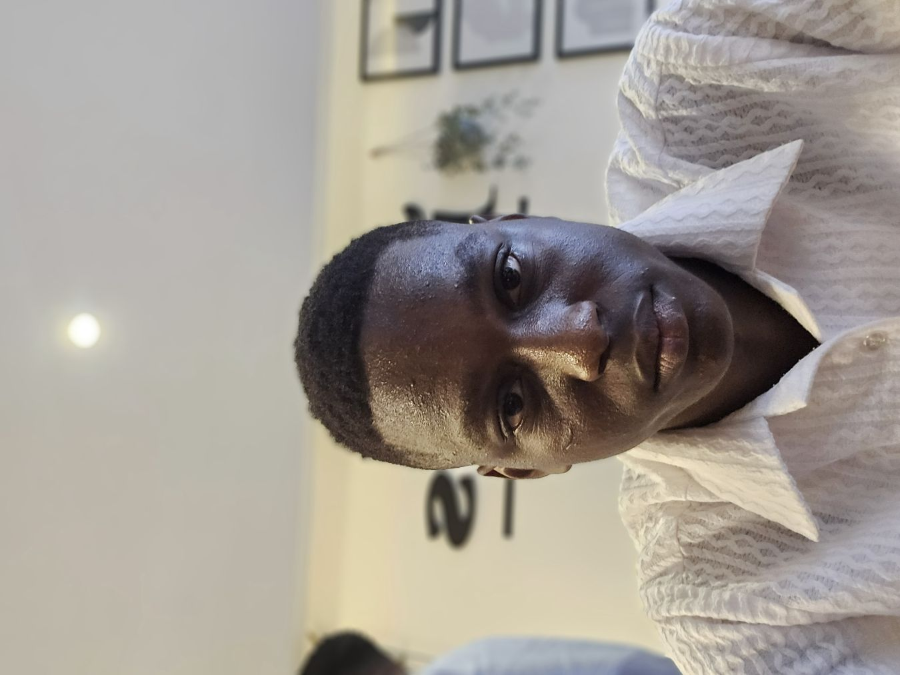

Sydney Tamunotonye Boma | WDD 130

My name is Sydney Tamunotonye. I am a student learning web development and currently working on my WDD 130 course projects. I am passionate about technology, design, and building creative web pages. I enjoy exploring new tools like GitHub, VS Code, and Squoosh to improve my skills.
I am also from Nigeria, and I love showcasing my favorite places and ideas through my projects. My goal is to grow into a confident web developer who can design responsive, user‑friendly websites.